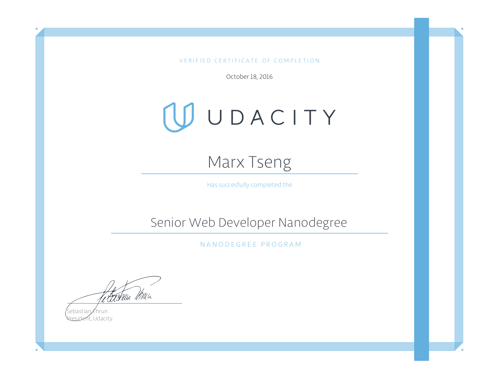
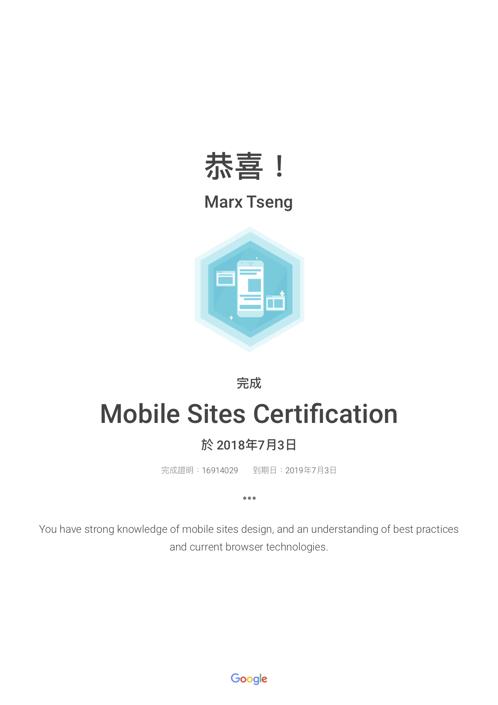

Chief Product Officer @ ischool, Inc. · Full-Stack & Mobile Architect
Marx Tseng
產品長（CPO）暨資深全端、行動應用與智慧穿戴開發工程師
現任台灣教育科技領導品牌 ischool, Inc.（澔學學習）產品長（Chief Product Officer） ，同時深耕第一線軟體架構設計與跨平台產品研發。專精於大型教育雲與智慧校園生態系（1Campus / 1Know）、OAuth 2.0 單一簽入認證架構、全端網站系統（React、Vue.js、Angular、Node.js、Ruby on Rails、Google Cloud Platform、AWS）、跨平台行動應用（iOS / Android Native 與 React Native 外掛架構），以及 Wear OS 與 Garmin Connect IQ（Monkey C）智慧手錶穿戴應用開發 。
2003 年 6 月畢業於朝陽科技大學營建工程研究所，碩士期間即專注於程式設計與演算法相關研究。曾任職於營建工程領域，憑藉對電腦軟硬體、網路資訊與軟體工程的濃厚熱忱，毅然轉換跑道投入資訊領域；先後完成 Java 程式設計專班與行政院第二專長人才培訓班（程式設計師班）嚴謹訓練，並取得 SCJP、Google Mobile Sites 與 Udacity Senior Web Developer Nanodegree 等多項國際認證，持續結合工程技術與產品思維打造高品質數位產品。
前端採用 React、Vue.js、Angular、Polymer 等現代框架；後端結合 Node.js (Express)、Ruby on Rails (RoR) 與 PostgreSQL、MongoDB 資料庫，並具備 OAuth 2.0 跨平台單一簽入（SSO）與 RESTful API 系統整合實戰經驗。
React
Vue.js
Angular
Node.js
Ruby on Rails
PostgreSQL
MongoDB
OAuth 2.0 SSO
深度整合 Google Cloud 與 AWS 生態系服務，前端搭配現代 SPA 框架，後端運用 Google App Engine (GAE)、Google Compute Engine / Cloud、Cloud Datastore (GCD) 與 Firebase，並透過 Google RESTful API 實現高可用性雲端服務。
Google App Engine
Cloud Datastore
Firebase
GCP / GCC
AWS
Nginx
專精於 iOS / Android Native 原生宿主框架結合 React Native 模組化外掛架構（Plugin Architecture）；並跨足智慧穿戴領域，以 Wear OS Watch Face Format 與 Garmin Connect IQ（Monkey C）打造跨平台智慧錶面。
React Native
Android / iOS Native
Wear OS (WFF)
Garmin Connect IQ
Monkey C
前端與呈現技術 Frontend & Presentation
JavaScript (ES6+)
React
Vue.js
Angular / AngularJS
Polymer
HTML5 / CSS3
MDX / mdx-deck
Offline-First PWA
後端語言與認證架構 Backend & Identity
Node.js (Express)
Ruby on Rails
Ruby
Java
Python
OAuth 2.0 / SSO
RESTful API
行動與穿戴式裝置平台 Mobile & Wearables
React Native
Android (Java / Gradle)
iOS Native
Wear OS Watch Face Format
Garmin Connect IQ (Monkey C)
工程工具鏈、機器人與雲端 DevOps, Cloud & IoT
GCP (GAE / GCD / Firebase)
AWS
PostgreSQL / MongoDB
Nginx
ESLint / Prettier / Gulp
LINE Bot API
ASUS Zenbo / Raspberry Pi
全部專案
智慧穿戴 (Wear OS & Garmin)
Web 與 SSO 認證系統
Mobile App 開發
Bot 與智慧裝置整合
Smartwatch Apps · Wear OS & Garmin Connect IQ
Monkey C & Watch Face Format
跨平台智慧手錶錶面系列：山徑 Isotrail · 山靜 Shan Jing · 星艦橋 Deckline
獨立設計與開發橫跨 Google Wear OS（Watch Face Format 純資源架構） 與 Garmin Connect IQ（以 Monkey C 撰寫之圓形 AMOLED 錶面程式） 的系列錶面作品。秉持隱私優先（Privacy-First，零資料收集、零追蹤、無外部網路請求）原則，深度整合手錶感測器歷史記錄（心率、身體能量指數 Body Battery、壓力）、步數目標軌跡視覺化與日出日落天文計算。
山徑 · Isotrail
等高線登山地圖風格錶面。依據每日步數與目標動態點亮山徑進度，整合心率、卡路里、爬升樓層與日出／日落時間計算。tsengmarx.isotrail.watchface
山靜 · Shan Jing
東方極簡美學錶面。Wear OS 版支援「我的相片」自訂背景與日曆／時鐘捷徑；Garmin 版整合心率、Body Battery 身體能量指數與壓力指標。tsengmarx.shanjing.watchface
星艦橋 · Deckline
科幻儀表板風格錶面。以雙側量表動態呈現活動目標達成進度，支援多樣時間樣式、配色主題與自訂資訊欄位（Complications）。tsengmarx.deckline.watchface
Interactive EdTech Web Platform
React
1Campus Classroom 智慧課堂即時互動系統
使用 React 打造的多端即時同步智慧教學平台，串聯教室大螢幕、教師行動裝置、學生端與智慧機器人助教，支援遠端投影片控播、即時問答與數據統計回饋。
Classroom（教室大螢幕） 接收教師手機端遙控播放影音、投影片（Google Slides），並即時呈現問答、隨機抽籤與學生投票統計結果。
Teacher（教師行動端） 透過手機遠端控制課堂播放內容、發起即時問答與隨機抽人，毫秒級同步狀態至教室與學生端。
Student（學生互動端） 隨教師授課進度進行即時互動、線上作答回覆與接收抽籤通知，提升課堂參與度。
Zenbo（課堂小助理） 整合華碩智慧機器人擔任課堂互動小助教，打造生動的智慧教室體驗。
Mobile Application (iOS & Android)
1Campus 智慧校園行動應用
採用 iOS 與 Android 原生語法（Native）建構穩固的底層平台框架，並運用 React Native 開發各項獨立業務功能外掛模組（Plugin Architecture）。兼顧原生系統的穩定度與跨平台模組化動態擴充彈性。
Identity & OAuth 2.0 SSO
1Campus Auth 單一簽入 (SSO) 認證整合架構
基於 OAuth 2.0 授權碼流程（Authorization Code Grant）與 Express 建構的單一簽入整合架構，提供第三方教育服務與縣市教育雲（如新北市親師生平台、均一教育平台等）無縫串接 1Campus 帳號體系。
EdTech Mobile Ecosystem
1Know 翻轉學習行動應用系列
涵蓋以 React Native 打造的跨平台 1Know 行動學習 App，以及針對學生端（1KnowLearner）與教師端（1KnowInstructor）使用 Java 開發之 Android 原生應用程式，將線上課程與知識管理延伸至行動裝置。
Enterprise Automation & Android Utility
企業內部 LINE Bot 自動化 & CallerID 來電辨識
開發企業內部專屬 LINE Bot 整合員工上下班打卡、差假申請與日常工作回報；並以 Java 開發 Android 原生 CallerID 來電資訊辨識工具，提升企業內部溝通與行動辦公效率。
Smart Robotics & EdTech
ASUS Zenbo 智慧機器人互動教學應用
運用 ASUS Zenbo SDK 開發互動式教學應用程式，結合語音互動、表情回饋與課堂教材，讓智慧機器人成為課堂中的雙向教學夥伴。
Engineering Culture Deck
Better Development 開發實務教材
採用 React mdx-deck 製作的互動式工程教育訓練簡報，系統性介紹 ESLint 靜態分析、Prettier 程式碼格式化、RESTful API 測試工具、Gulp 自動化流程、VS Code / Vim 開發環境配置、Udacity Git Commit 規範與 Nginx 反向代理設定。
Voice AI & Raspberry Pi Open Source
Google Assistant with Snowboy
以 Python 整合 Google Assistant Service SDK 與 Kitt-AI Snowboy Hotword Detection 語音喚醒偵測引擎之開源實作，支援 Raspberry Pi、Linux 與 macOS 跨平台自訂喚醒詞語音助理部署。
Udacity Nanodegree Portfolio
Senior Web Developer 五大實作專案
涵蓋響應式活動規劃、Offline-First 離線優先時刻查詢、無障礙設計（Web Accessibility）、企業視覺化儀表板與裝置感測器應用：

點擊放大檢視
Udacity Verified Certificate
Senior Web Developer Nanodegree
簽發日期：2016 年 10 月 18 日

點擊放大檢視
Google Academy for Ads
Mobile Sites Certification
簽發日期：2018 年 7 月 3 日（認證編號：16914029）
學歷與專業資格認證
Java & Professional Certifications
SCJP 國際認證 & MOUS 專家級認證
取得 Sun Certified Java Programmer (SCJP) 專業程式設計師認證與 Microsoft Office User Specialist (MOUS) 專家認證。
Intensive Software Engineering Training
行政院第二專長人才培訓班（程式設計師班）& Java 程式設計專班
完成高強度軟體工程與物件導向程式設計專業訓練，奠定全端系統開發基石。
2003 年 6 月（民國 92 年）畢業
朝陽科技大學 營建工程研究所 碩士
碩士研究方向結合程式設計與演算法應用，培養嚴謹的系統分析與邏輯建模能力。